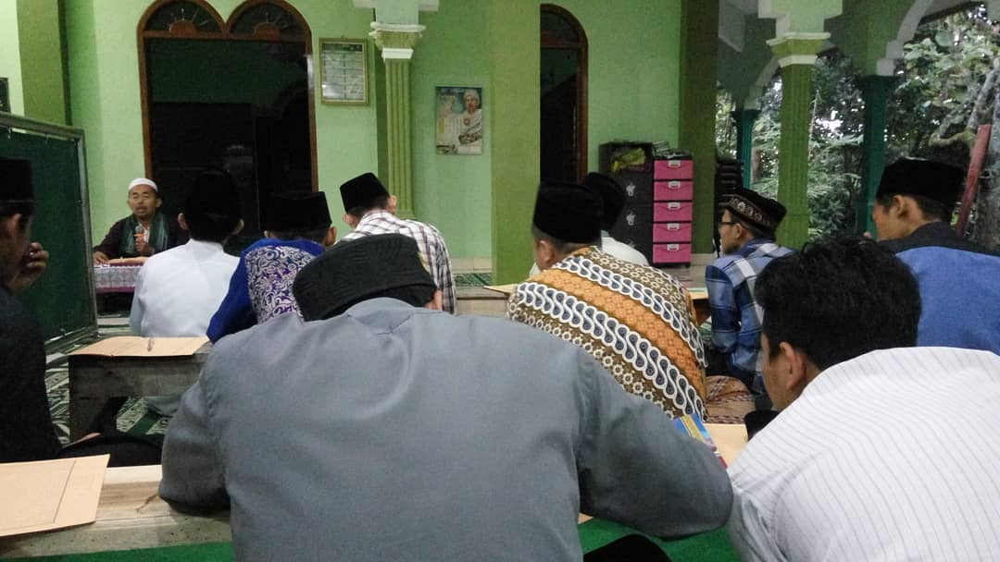

Pondok Pesantren
Husnul
Khotimah
Menerima Pendaftaran Santri Baru
Mereka yang tidak bisa beramar ma'ruf dan nahi munkar kepada dirinya sendiri Amat tidak pantas melakukan itu kepada orang lain.
Tentang

Lembaga Pendidikan Salaf
Berbasis Ahlusunnah
Waljamaah
mengajarkan Al-Qur'an, Al Hadits, Ilmu Alat, Shorof, dll. ala Ahlu Sunnah Waljama'ah di dalam wadah Nahdlatul Ulama.
Sistem pendidikan yang diterapkan adalah sistem klasik sorogan, bandongan, dan wetonan.
Pendaftaran
Ayuk, Ngaji
Bekali kehidupan dengan lebih memahami ajaran Agama
* Pendaftaran dapat melalui form berikut atau datang langsung ke
Ponpes Husnul Khotimah